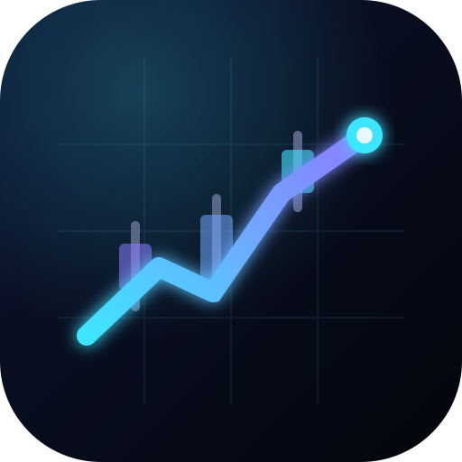

看盤 App · 設計稿 v1.0 · 2026-11-04 · 風格「Quant Grid」
深色量化儀表板：深海軍藍黑底、24px 髮絲線格點、青／紫 AI 光暈、等寬數字。所有數字與商品都是虛構範例，不是真實行情。
底色偏藍的近黑，讓青色光暈與紅綠漲跌都「浮」起來。錯誤與中斷刻意用橘色，不用紅色，避免和「上漲」混淆。淺色主題是冷白實驗室，同一套語意、壓深以達到對比。
中文 Noto Sans TC、標題 Manrope（與記帳 App 相同）；所有數字改用 JetBrains Mono：等寬、斜線 0、tabular，位數變化時不跳動，也是科技感的主要來源。
數字層級
文字層級
EYEBROW · 11 MONO 大寫 · 區塊標籤
內文 15 · Noto Sans TC 400，行高 1.5。
次要文字 13 · --mu
第三層 12 · --mu2（格線標籤、過期價格）
輸入框一律 ≥ 16px（避免 iOS 自動縮放）；點擊目標 ≥ 44pt；間距 4／8／12／16／24／32；圓角 8／12／18（與記帳 App 相同）。
意義不只靠顏色：漲跌一定有 ▲▼／＋－；狀態一定有文字或圖示。
看盤工具最危險的錯誤是讓人把過期價格當成現價。過期與中斷的價格：去色＋虛線底線＋降到 --mu2，走勢圖轉灰；稍舊只加琥珀標籤和時間。即時不加標籤（只在標題區顯示脈動的「即時」）。
主要情境、單手操作。底部分頁列：總覽／自選／警報／設定／搜尋。子頁左上 App 內返回，並支援邊緣滑動返回。主要操作（週期、加警報、加自選）放在拇指範圍內。
≥ 960px 改用左側 76px 圖示導覽列（與記帳 App 相同）。個股頁 ≥ 1180px 為三欄：左＝持倉與自選清單、中＝圖表、右＝部位／報價／警報；直式 820 仍是單欄，但卡片變寬、圖表加高。
與 iPad 橫式同一套版面。總覽：左大右小兩欄；個股頁三欄；警報頁左清單、右通知紀錄；新增警報在桌面以右側面板開啟。
載入用骨架（不是整頁轉圈）；空狀態各有下一步；離線保留資料並停用寫入；登入過期保留表單；圖表缺資料明講「自 HH:mm 起」並讓缺口斷線。
分時線
--ch-line 1.8px＋光暈；下方漸層面積（資料不完整時不畫面積，只畫線）。--ch-prev，左側標「昨收 98.00」。Y 軸至少包含昨收。coverage.complete=false 時上方提示「分時線自 10:42 起」；gaps 的區間斷線，不補線。盤前空資料顯示「尚未開盤」。K 線（日／週／月）
partial 用虛線框。互動
touch-action:pan-y：水平手勢屬於圖表，垂直才捲動頁面；圖表內拖曳不觸發下拉更新。aria-label「分時線：現價 100.50，昨收 98.00，區間高 101.00 低 98.00」。迷你走勢圖
權限 6 種狀態（設定頁與新增警報頁都會用到），以及鎖屏通知文案：標題一行、內文一行，一眼讀懂。推播不含部位數量與金額。
鎖屏通知範例
文案規則
{名稱} {代號}｜{規則白話}；內文：現價 {價格}（{±%}）· {HH:mm} · {資料狀態}。tag 取代舊的，不洗版。navigator.setAppBadge）。App 圖示（深色／淺色底）
K 棒＋一條上升的青紫光線，終點是發光的「即時」點。和記帳 App 同為深底圓角方形，但改用光線與 K 棒區分。
啟動畫面
提示條
安全區域：頂部列 padding = 10px + safe-area-inset-top；分頁列 padding-bottom = 6px + inset-bottom。頂部列在捲動時以漸層底襯淡出。
| 項目 | 一致 | 刻意不同 |
|---|---|---|
| Tokens | 同樣的變數名稱（--bg --s1–3 --ln --tx --mu --ac …）、圓角 8／12／18、44pt 點擊、安全區域變數 | 底色由暖炭灰改為偏藍近黑；主色由霧藍改為青＋紫漸層光 |
| 導覽 | 手機底部分頁列；≥960px 左側圖示列、滑過顯示名稱 | 看盤的圖示列更窄（76px），把寬度留給圖表；個股頁三欄 |
| 卡片 | 圓角卡片、髮絲線分隔、卡片標題 16px | 重點卡片加漸層描邊與角落刻度（儀表感）；背景加 24px 格點 |
| 字型 | Noto Sans TC＋Manrope | 數字改用等寬 JetBrains Mono（對齊與科技感） |
| 顏色語意 | 金額不只靠顏色（記帳用正負號，看盤用 ▲▼／＋－） | 看盤有紅漲綠跌／綠漲紅跌切換；錯誤改用橘色（紅色已用於上漲） |
| 主題 | 深色為主，系統／深色／淺色三選一 | 淺色是冷白而非咖啡紙色 |
| 圖示 | 深底圓角方形 App 圖示、同樣 1.7px 線條圖示 | 獨立 App 圖示（K 棒＋光線） |